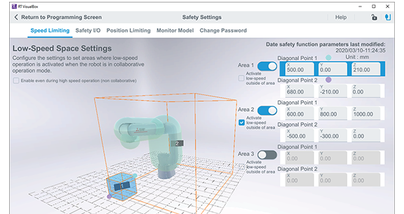
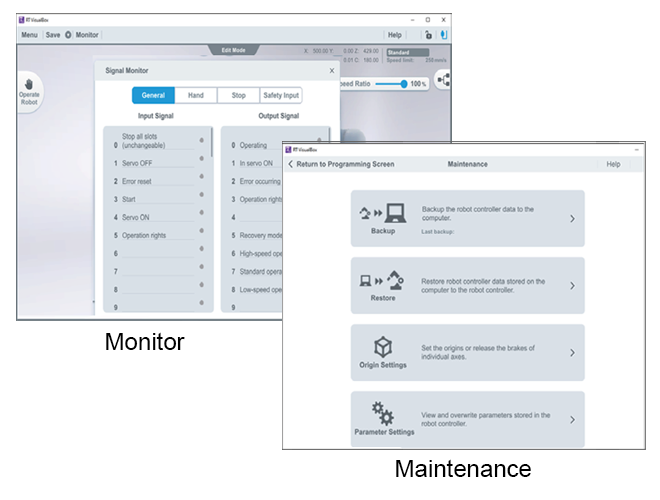

Robot engineering software (MELFA)MELSOFT RT VisualBox

Pengaturan tangan
Siapkan gripper secara intuitif dan mudah.
- Panduan Pengaturan ASSISTA menyediakan metodologi yang lebih mudah dan intuitif bagi operator untuk konfigurasi gripper.
- Digunakan untuk mengonfigurasi jenis pemasangan, pengaturan tangan, pengaturan benda kerja, dan posisi pegangan benda kerja.
- Untuk tangan elektrik yang direkomendasikan, dapat dengan mudah disiapkan dan dikonfigurasi untuk aplikasi Anda.


Pengaturan penglihatan
Tidak memerlukan keahlian sistem Penglihatan.
Penyesuaian fokus kamera penglihatan dan registrasi kerja dapat dikonfigurasikan hanya dengan menyentuh layar. Ini berarti Anda dapat menggunakannya bahkan tanpa pengetahuan khusus tentang robot.
Digunakan untuk mengonfigurasi koneksi sensor penglihatan, titik pengambilan dan identifikasi benda kerja, pengaturan identifikasi pola.


Pengaturan keamanan

Digunakan untuk mengonfigurasi pengaturan wajib fungsi keselamatan.
Pengaturan berikut dapat dikonfigurasi pada layar Pengaturan Keselamatan
- Pembatasan kecepatan
- I/O Keselamatan
- Pembatasan posisi
- Model pemantauan
Monitor, Pemeliharaan

Item berikut dapat ditampilkan dengan fungsi pemantauan.
Daftar posisi
Monitor variabel
Monitor tunggal
Riwayat kesalahan
Tindakan dalam tabel di bawah ini dapat dilakukan untuk melakukan pemeliharaan.
Cadangkan
Pulihkan
Pengaturan asal
Pengaturan parameter